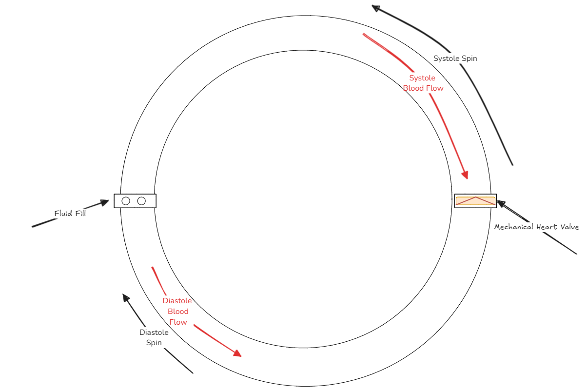

Pulstile Flow Blood Loop (TGT 2.0)
In-vitro Pulsatile Flow Environment for Blood Clot Growth Characterization near Bileaflet mechanical heart valves.
In-vitro Pulsatile Flow Environment for Blood Clot Growth Characterization near Bileaflet mechanical heart valves.
Led the development of a Mars rover prototype, managing cross-functional teams and implementing advanced control systems for autonomous operation.
Led the development of a Mars rover prototype, managing cross-functional teams and implementing advanced control systems for autonomous operation.

Developed an advanced AI tool utilizing Retrieval Augmented Generation (RAG) to enhance large language models with real-time data access and contextual understanding.
Developed innovative draping solutions for surgical robots to ensure sterility and ease of use in operating rooms.

Led the development of a Mars rover prototype, managing cross-functional teams and implementing advanced control systems for autonomous operation.
Led the development of a Mars rover prototype, managing cross-functional teams and implementing advanced control systems for autonomous operation.

Developed and optimized a cleaning process for laser-cut Nitinol implants, including fixture design and manufacturing line integration.

A series of CAD exercises designed to enhance modeling skills and proficiency in using CAD software for complex designs.